Street photography, shot on a Sony ZV-E10 with a Tamron 17-70mm f/2.8. This set is from Florence — hover a frame for the caption.
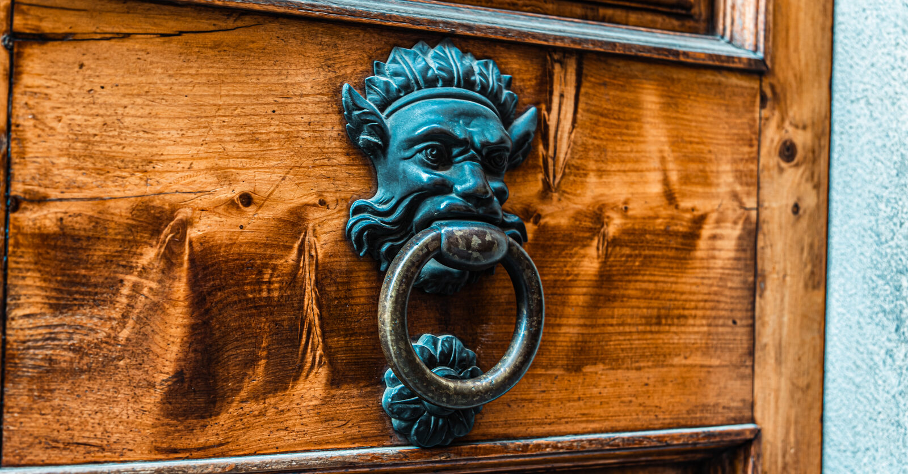
Door knocker, Florence
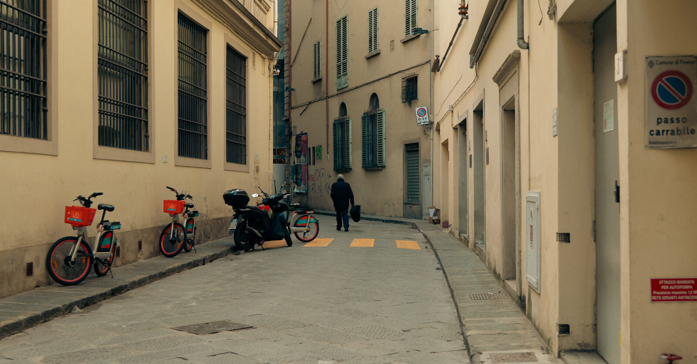
Back alley, Florence
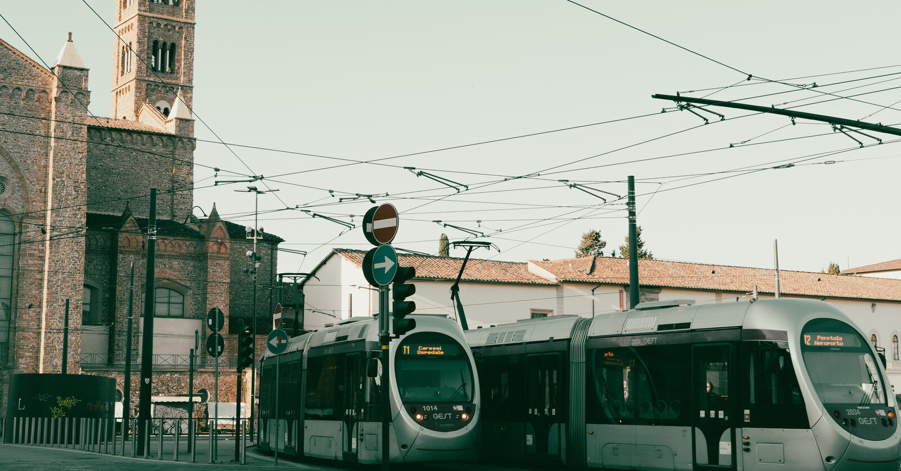
Tram, Piazza del Carmine
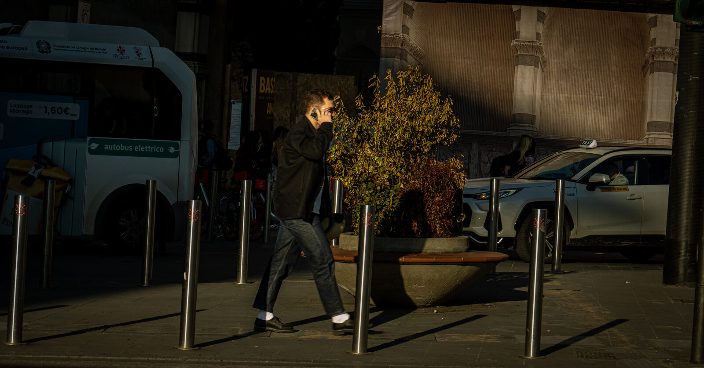
On the phone, Florence

Via de' Calzaiuoli, Duomo behind
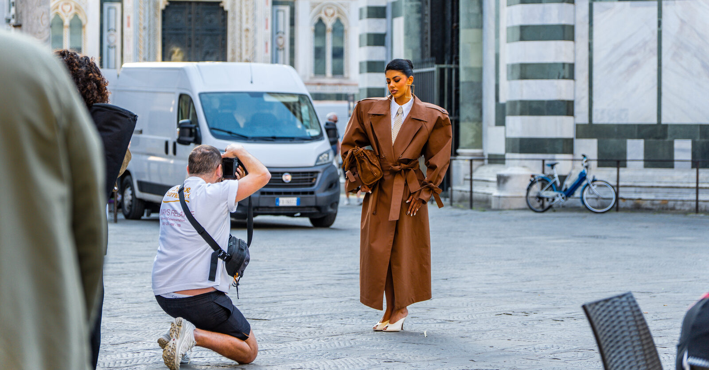
Fashion shoot, Piazza del Duomo
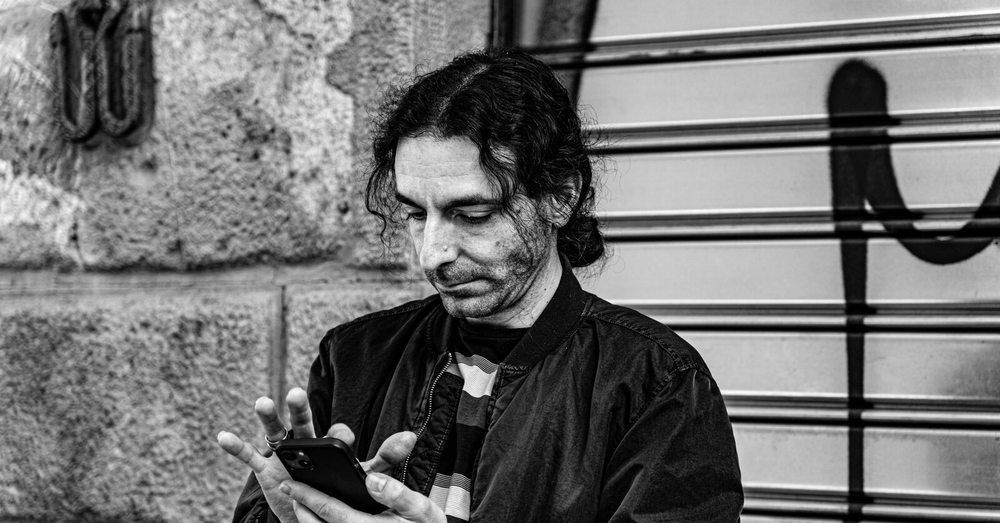
Portrait, Florence
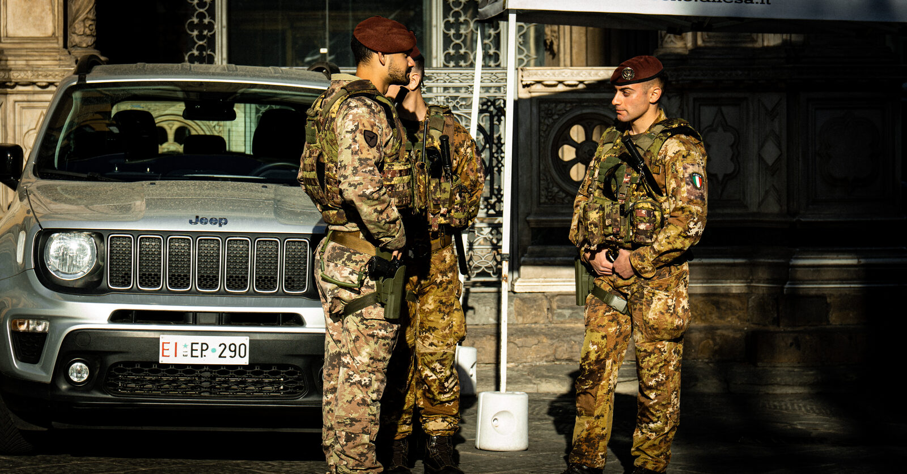
Soldiers on duty, Piazza del Duomo
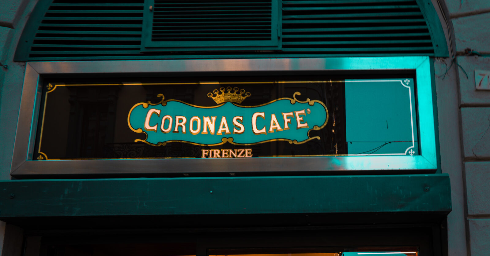
Coronas Café, Firenze
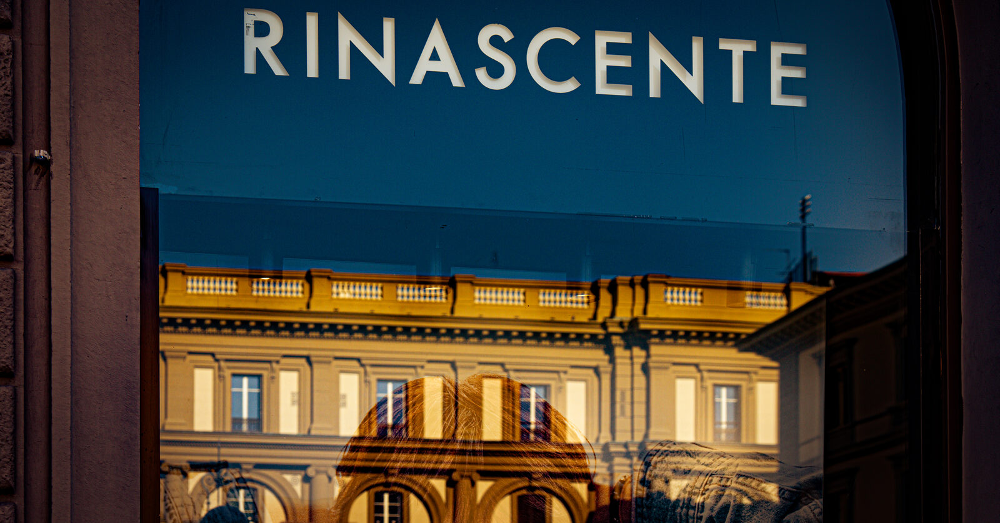
La Rinascente, reflected
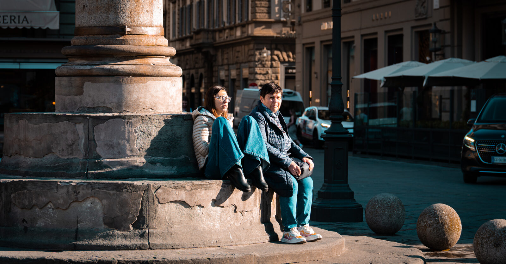
Piazza della Repubblica
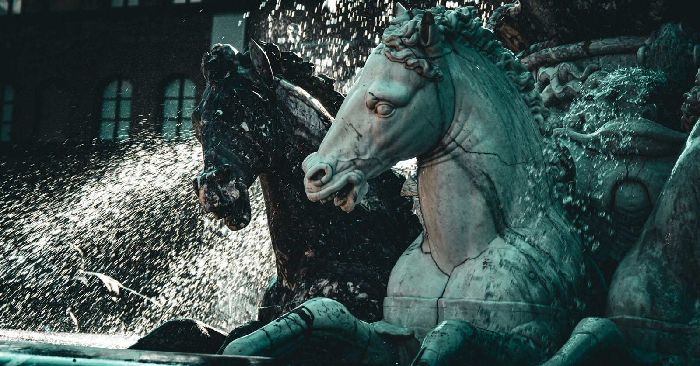
Fontana del Nettuno, horses
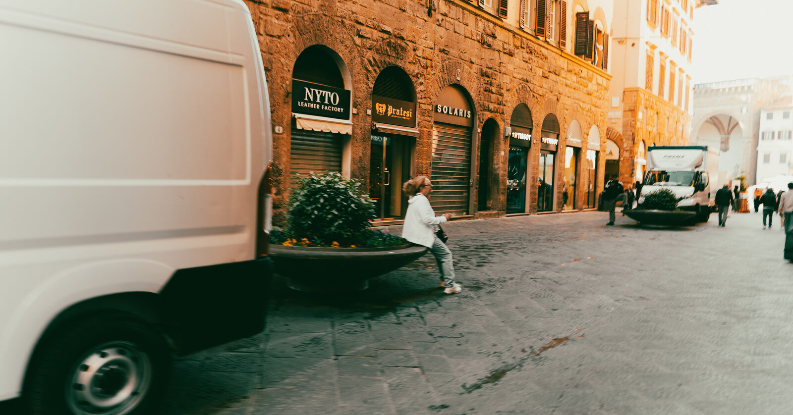
Loggia dei Lanzi, market street
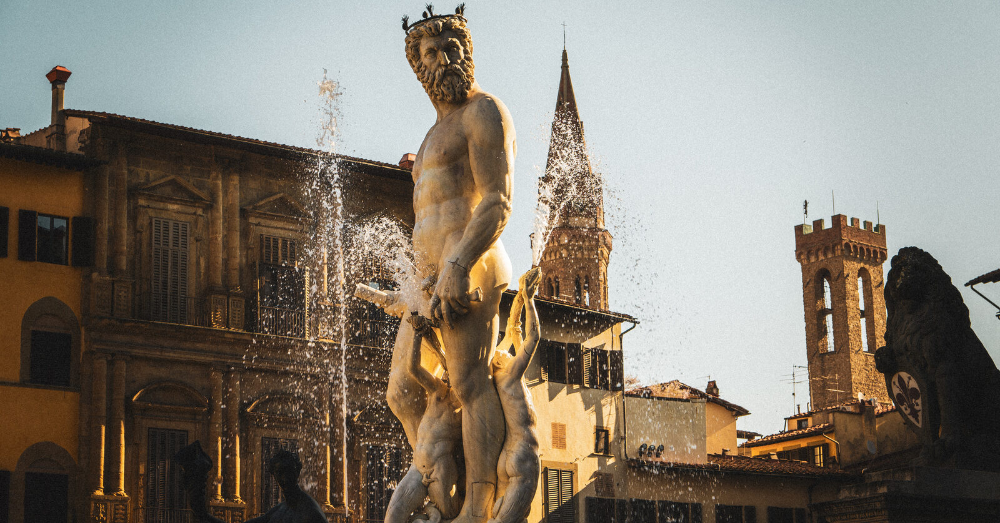
Statue and shadow
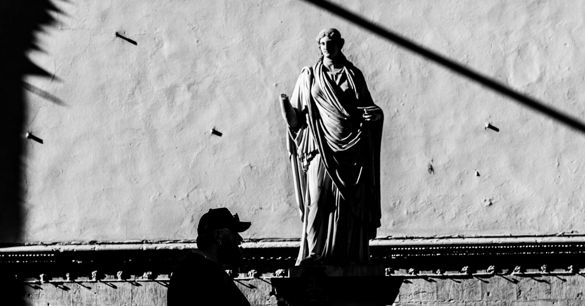
Ponte Santa Trinita, Arno
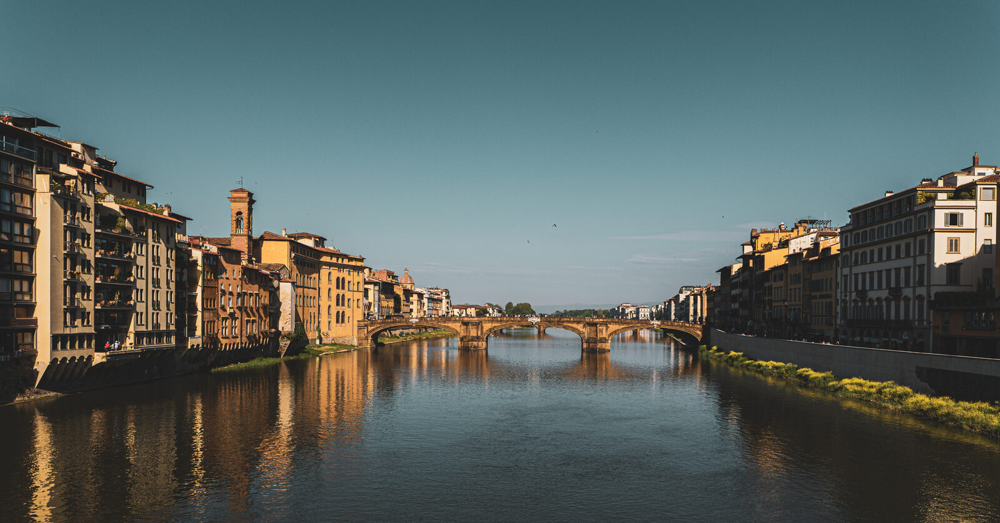
Arno, looking toward the hills
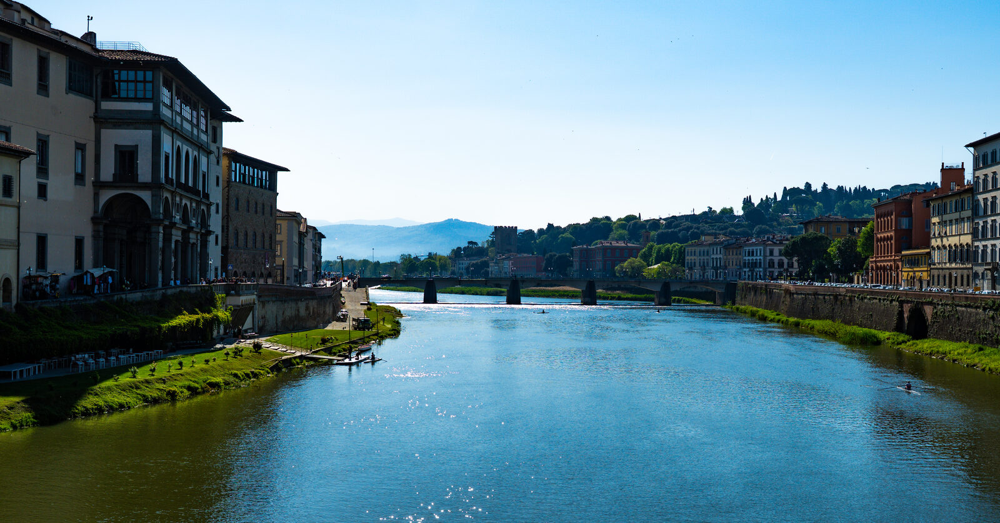
S.A.D.A Antichità, Volterra sign
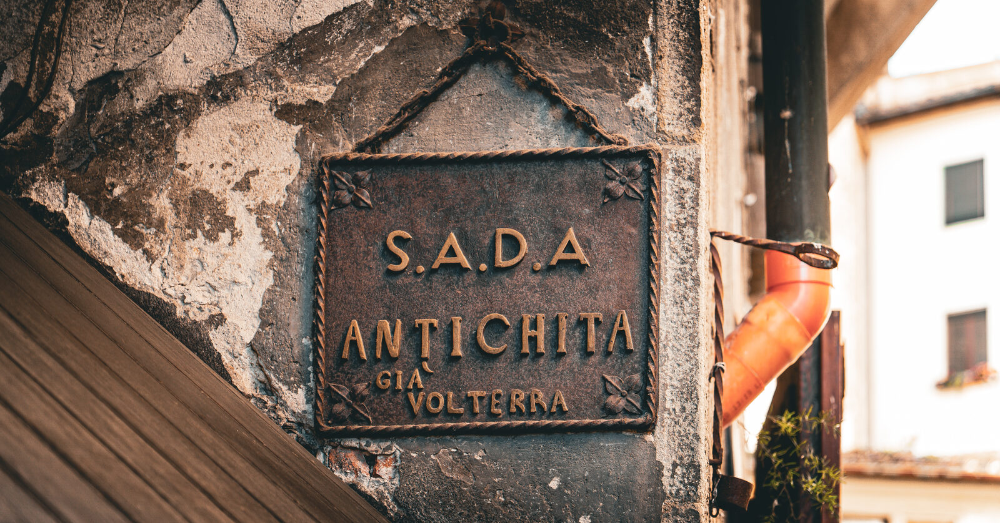
Ponte Vecchio, from Ponte Santa Trinita
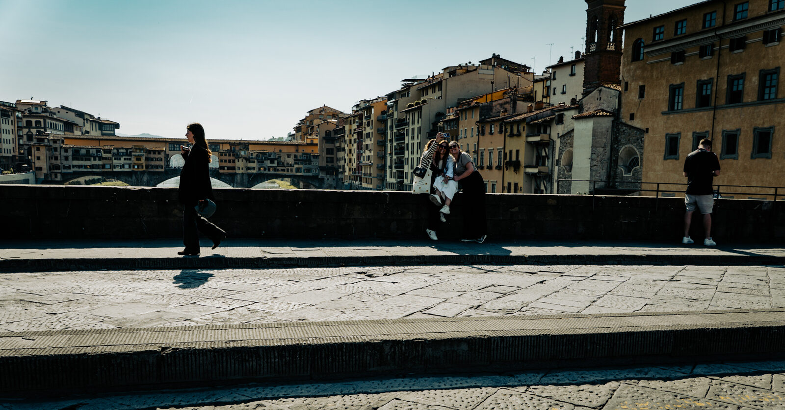
Fontana del Nettuno
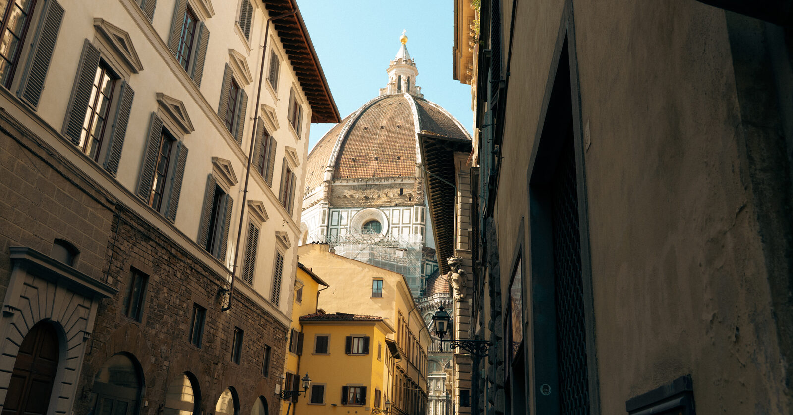
Alley toward the Duomo